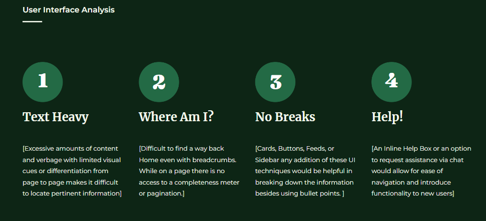

Definition
User Interface Analysis
Purpose
The main focus of the website is to provide farmers, food processors & retailers, horticulturists and distributors access to information on youth employment programs, asset protection in the form of Insurance, updated information surrounding International trade barriers and funding.
As you can see in the image located below of the current appearance of the Agriculture & Agri-Food Canada web homepage.

Figure 1: Current Homepage Look of Agriculture & Agri-Food Canada Website
Research
We first analyzed the selected features and pages of the website and conducted research on each page's primary focus.

Figure 2.a: Focus on Select pages of the Website
Next we analyzed the current colour detail of the overall homepage and created a colour palette of the overall to visualize which hex code colours were used for the composition of the current page.

Figure 2.b: Colour Palette of Current Homepage
We developed a User Proto Persona to best fit the type of target audience the website is aiming to provide the best of it’s services to. Highlighting his behavioral demographics, goals & needs, and pain points & frustrations.

Figure 2.c: Proto Persona of a typical user for the website
Usability Testing (First Stage)
We conducted our first stage of usability tests by observing how normal individuals navigate the website through a series of tests locating specific information asked by us the designers.

Figure 2.d.1: Task of navigating through the Youth Employment screen

Figure 2.d.2: Task of navigating through to seek AgriInsurance
Ideation
Redlining
We evaluated and redlined which criteria & content of the homepage should be modified to our preceptive of creating a smoother navigation for the user. We arrived at these key points based on input from ourselves, along with our first set of usability tests. We conducted the heuristic evaluation to identify issues of the website from our end.
-
1) Home Link
2) Search Navigation
3) Accordion Menu
4) Breadcrumbs
5) Categorization
6) Content Structuring
7) Categorical List
Figure 3.a: Redlining Navigating Icons & Content
We took in the input we received from our user tests and took in consideration for the development of the redesign stage for the homepage.
Figure 3.b: Input/Observations from the User Tests
Sitemapping
Here we jotted down each individual section icon from the Homepage to the dropdown menu of the website’s current structure and created a redesign of our sitemap.
A simple sitemap designed to provide our users with a systematic view of the primary & secondary navigation on the website, along with the footer.
A brief overview about the pages and the relationships between them.